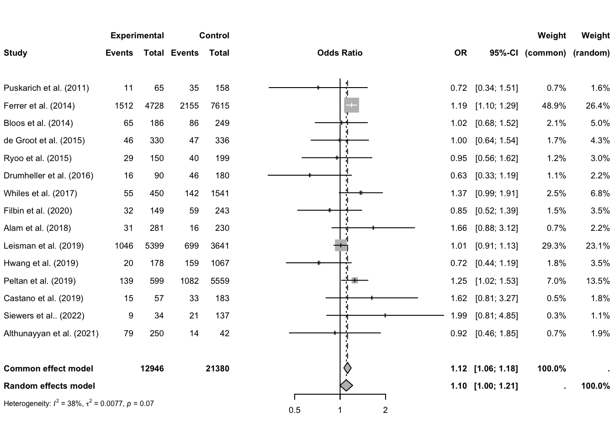

```{r}
mdata <- read.csv("data/sepsis_meta.csv", sep=";")
rmarkdown::paged_table(mdata[1:5,])
```This report extends the work of Rothroc et al. 2020 metanalysis, which reviewed data from 14 studies examining the impact of antibiotic administration timing on mortality among sepsis patients. Specifically, Rothroc et al. compared mortality rates between two groups: patients who received antibiotics within 0 to 1 hour of sepsis onset (immediate administration) and those who received antibiotics within 1 to 3 hours (early administration). The original study found no significant difference in mortality between these groups.
This analysis builds on that original work by incorporating two additional studies published after the original review. Following a description of the selection criteria for the studies included, the variables and the method for estimating samples’ standard deviations are discussed.
Subsequently, random and fixed effect models are applied to determine if the difference between the immediate and early treatment groups is still insignificant with the expanded data set. To illustrate these findings and reflect on publication bias forest and funnel plots are presented.
The report concludes with an analysis of sample-related and methodological factors that may influence the observed effects.
Included studies
Apart from the data from the original meta-analysis, two additional studies were included to further validate the findings. One study was conducted by Siewers et al. (2021) in Denmark, and the other by Althunayyan et al. (2022) in Riyadh, Saudi Arabia.

Both of these studies adhered to the publication selection criteria utilized by Rothroc et al. They were recognized in the established medical publishing service (PubMed) and provided data for similarly defined patient groups: septic patients who received antibiotics within 0-1 hours and those who received antibiotics within 1-3 hours from sepsis onset. Additionally, all patients were above the age of 18.
Original publication selection criteria: The original meta-analysis included studies derived from recognized medical literature services (PubMed, Wiley’s Cochrane Library, EMBASE, Cumulative Index of Nursing and Allied Health Plus). These studies contained data for the two groups of interest (immediate and early antibiotic administration).
Exclusion criteria: Studies were excluded if they did not provide the total number of patients for either the 0 to 1-hour or 1 to 3-hour groups, lacked mortality data for either antibiotic period, were duplicates or used the same patient database during the same period, or included patients aged 17 years or younger.
Data
List of Used Variables
Author
character. The study label containing the author(s) of the study.
Number_of_Subjects_01
numeric. The number of subjects in the immediate antibiotic treatment group (0-1 hours).
Mortality_of_Subjects_01
numeric. The mortality rate in the immediate antibiotic treatment group (0-1 hours).
Number_of_Subjects_13
numeric. The number of subjects in the early antibiotic treatment group (1-3 hours).
Mortality_of_Subjects_13
numeric. The mortality rate in the early antibiotic treatment group (1-3 hours).
Number_of_Hospitals
numeric. The number of hospitals involved in the study.
Design
character. The study design, including whether it was retrospective, prospective, observational, etc.
Median_Age
numeric. The median age of patients in the study.
Percent_Male
numeric. The percentage of male patients in the study.
Median_Time_to_Antibiotics
numeric. The median time from sepsis onset to antibiotic administration.
Reading the data:
Calculation of mortality standard deviation
The original methodology employed by the authors involved calculating odds ratios with 95% confidence intervals. Here the original mortality rates were selected as the base parameter.
Because mortality is an estimate of probability of death, standard deviations were calculated assuming a binomial distribution with the underlying probability of death equal to the mortality rate.
The standard deviation of binomial distribution is expressed as:
\[ \text{SD} = \sqrt{n \cdot p \cdot (1 - p)} \]
Where:
- \(SD\) - Standard deviation of the binomial distribution.
- \(n\) - Number of independent trials (sample size).
- \(p\) - Probability of presence of event in a single trial.
- \(1-p\) - Probability of absence of event in a single trial.
In R this could be easily calculated with mutate function:
```{r}
mdata <- mdata %>%
mutate(Binom_SD_01 = sqrt(Mortality_of_Subjects_01 * (1 - Mortality_of_Subjects_01) * Number_of_Subjects_01)) %>%
mutate(Binom_SD_13 = sqrt(Mortality_of_Subjects_13 * (1 - Mortality_of_Subjects_13) * Number_of_Subjects_13))
```Calculation of effect sizes
```{r}
m <- metacont(n.e=Number_of_Subjects_01,
mean.e=Mortality_of_Subjects_01,
sd.e=Binom_SD_01,
n.c=Number_of_Subjects_13,
mean.c=Mortality_of_Subjects_13,
sd.c=Binom_SD_13,
data=mdata,
studlab=paste(Author),
comb.fixed = TRUE,
comb.random = TRUE,
)
m
```Number of studies: k = 16
Number of observations: o = 7037.082 (o.e = 3327, o.c = 3710.082)
MD 95%-CI z p-value
Common effect model -0.0036 [-0.2679; 0.2608] -0.03 0.9790
Random effects model -0.0036 [-0.2679; 0.2608] -0.03 0.9790
Quantifying heterogeneity:
tau^2 = 0; tau = 0; I^2 = 0.0% [0.0%; 52.3%]; H = 1.00 [1.00; 1.45]
Test of heterogeneity:
Q d.f. p-value
0.14 15 1.0000
Details on meta-analytical method:
- Inverse variance method
- Restricted maximum-likelihood estimator for tau^2Observation: P-values for both models are very high, indicating no statistical differences between the control and experimental groups.
Forest plot
```{r}
m %>% forest()
```
Observation: Forest plots also indicate a lack of significant differences at the individual study levels, where mean differences are consistently around zero.
Funnel plot
```{r}
m %>% funnel()
```
Funnel Plot with Contours for P-values:
```{r}
contour_levels <- c(0.90, 0.95, 0.99)
contour_colors <- c("darkblue", "blue", "lightblue")
funnel(m, contour = contour_levels, col.contour = contour_colors)
legend("topright", c("p < 0.10", "p < 0.05", "p < 0.01"), bty = "n", fill = contour_colors)
```
Observation: The plot clearly demonstrates the insignificance of differences between experimental and control samples across the studies. The data points are all within the white area, which represents high P-values, and are symmetrically distributed around zero.
Finding what explains the results
Let’s investigate whether the effect sizes are influenced by different characteristics of the samples and applied research methods.
```{r}
m %>% metareg(`Number_of_Hospitals` + `Percent_Male` + `Median_Age` + `Median_Time_to_Antibiotics` + `Design`)
```Warning in find(i): elements of 'what' after the first will be ignoredWarning in formula.character(object, env = baseenv()): Using formula(x) is deprecated when x is a character vector of length > 1.
Consider formula(paste(x, collapse = " ")) instead.Warning: 6 studies with NAs omitted from model fitting.Warning: Redundant predictors dropped from the model.
Mixed-Effects Model (k = 10; tau^2 estimator: REML)
tau^2 (estimated amount of residual heterogeneity): 0 (SE = 0.4570)
tau (square root of estimated tau^2 value): 0
I^2 (residual heterogeneity / unaccounted variability): 0.00%
H^2 (unaccounted variability / sampling variability): 1.00
R^2 (amount of heterogeneity accounted for): 0.00%
Test for Residual Heterogeneity:
QE(df = 1) = 0.0172, p-val = 0.8955
Test of Moderators (coefficients 2:9):
QM(df = 8) = 0.0849, p-val = 1.0000
Model Results:
estimate se zval pval
intrcpt -0.0036 7.8122 -0.0005 0.9996
Number_of_Hospitals 0.0042 0.2506 0.0168 0.9866
Percent_Male 0.0003 0.1618 0.0020 0.9984
Median_Age -0.0032 0.1143 -0.0277 0.9779
Median_Time_to_Antibiotics 0.0007 0.0137 0.0498 0.9603
DesignProspective Controlled Open Label 0.0635 8.3953 0.0076 0.9940
DesignProspective observational -0.0659 12.1934 -0.0054 0.9957
DesignProspective. randomized. nonblinded 0.0390 1.7671 0.0221 0.9824
DesignRetrospective cohort 0.0689 1.6203 0.0426 0.9661
ci.lb ci.ub
intrcpt -15.3153 15.3081
Number_of_Hospitals -0.4870 0.4954
Percent_Male -0.3168 0.3175
Median_Age -0.2272 0.2209
Median_Time_to_Antibiotics -0.0262 0.0276
DesignProspective Controlled Open Label -16.3910 16.5180
DesignProspective observational -23.9644 23.8327
DesignProspective. randomized. nonblinded -3.4245 3.5024
DesignRetrospective cohort -3.1068 3.2446
---
Signif. codes: 0 '***' 0.001 '**' 0.01 '*' 0.05 '.' 0.1 ' ' 1Observation: Neither the number of hospitals, the percentage of males, nor the time to antibiotics prove significant. This also applies to the four different ways the studies were designed - none of them are significant.
Conclusion
To conclude, after adding the two studies, the results of the original metaanalysis remained unchanged and were positively verified. All applied methods of significance testing — common effect model, random effect model, and regression of the effects on various study characteristics — failed to demonstrate any significant difference between immediate (0-1 hours after sepsis onset) and early (1-3 hours after sepsis onset) antibiotic treatment. This is also visible on funnel and forecast plots, which provide a clear perspective on individual studies.
Further research
Given the limited scope of this analysis and its aggregate level, similar studies could be conducted on more strictly defined patient groups (e.g., only those with severe sepsis or septic shock) and different time intervals.